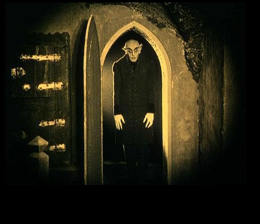
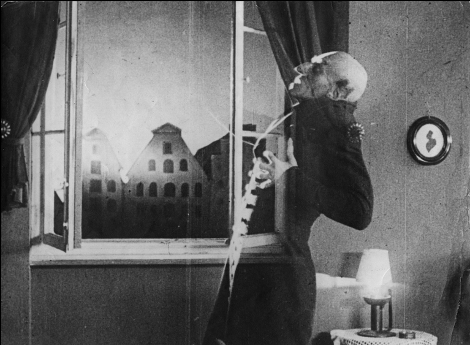
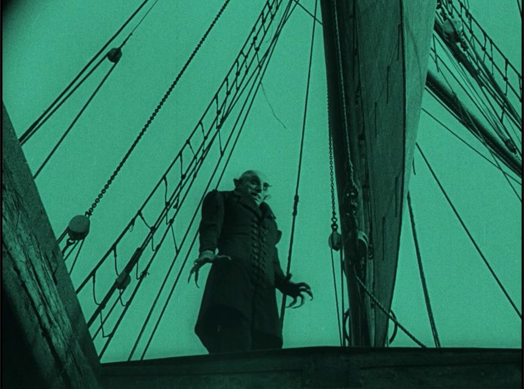
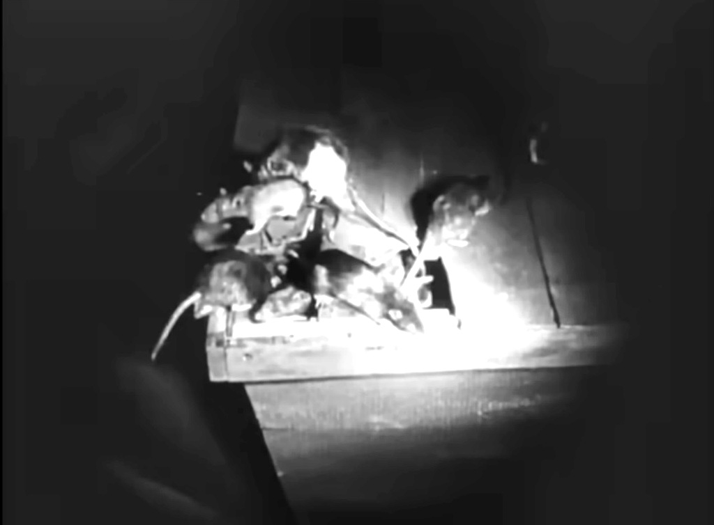
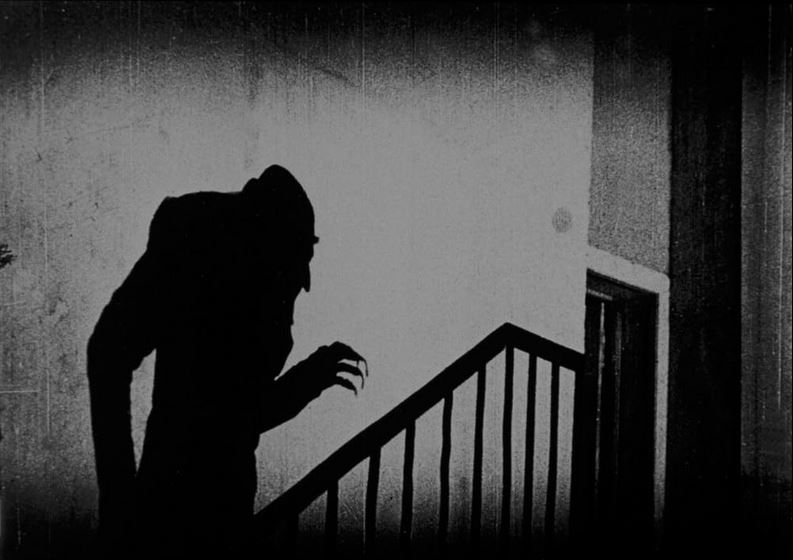

How Dracula became
Nosferatu
From Stoker's novel to Galeen's screenplay to Murnau's film — the exact points where constraint produced a new creature
F. W. Murnau, 1922 · Screenplay: Henrik Galeen · Based (without authorisation) on Bram Stoker, Dracula, 1897
When Prana Film set out to adapt Bram Stoker's Dracula without securing the rights, screenwriter Henrik Galeen was given an instruction that sounds simple: change the names, move the action. What followed was not a disguised copy. It was, transformation by transformation, the invention of a different kind of creature — one whose formal properties arose directly from the obligation to be something other than what it was based on.
Each panel below traces one transformation through its three stages: what Stoker wrote, what Galeen changed in the screenplay, and what Murnau and designer Albin Grau produced visually. The final strip identifies what the transformation produced — the formal invention that would not exist without the constraint. Click any panel to open it.
The source: Bram Stoker's novel Dracula, published 1897. The original against which every subsequent change is measured.
Henrik Galeen's adaptations: names, locations, period, plot elements. Changes made at the level of the written scenario.
What the film adds beyond the screenplay: the visual figure of Orlok, staging, formal choices specific to cinema.

Count Dracula is an aristocrat — tall, physically powerful, with a sharp white moustache and pointed ears. He is a polymath: fluent in English, well-read in history and law, capable of sustained intellectual conversation. He can pass in polite society.
He is seductive and controlling. His bite transforms the victim into a vampire. He is defeated by a group of five men who pursue him across Europe.
The count is renamed Graf Orlok. The basic plot is retained, but a key mechanism changes: Orlok's victims do not become vampires — they die. The transmission of vampirism is severed entirely.
Another departure: only a woman can defeat Orlok — by keeping him until sunrise. The group of male hunters disappears entirely.
Albin Grau's visual conception transforms the written Orlok entirely. Max Schreck's figure is skeletal, bald, bat-eared, with elongated talon-like fingers. Nothing aristocratic, nothing seductive. He moves with stiff, inhuman precision.
The term Nosferatu was glossed by Emily Gerard (1885) as deriving from the Slavonic nosufuratu — itself traced to the Greek nosophoros: plague carrier. This etymology is now considered spurious by Slavic scholars, but it passed through Stoker's notes into the film's title, where it functions regardless of its origin. The name announces what the visual figure confirms.
Count Dracula is an aristocrat — a polymath fluent in English, well-read, capable of passing in polite society. He is seductive and controlling. His bite transforms the victim into a vampire. He is defeated by a group of five men.
The count is renamed Graf Orlok. Key change: Orlok's victims do not become vampires — they die. The vampiric transmission is severed. The group of male hunters disappears; only a woman can defeat Orlok.
Albin Grau's Orlok is skeletal, bald, bat-eared, with talon-like fingers — nothing aristocratic, nothing seductive. The name Nosferatu, glossed after the spurious etymology of Emily Gerard as meaning plague carrier, announces what the figure confirms — whatever its actual origin.
The dismantling of the seductive aristocratic vampire and the invention of the vampire as pestilence — a figure of epidemic death rather than erotic domination. Orlok is not a fallen nobleman. He is a germ with a face.

In Stoker's novel, sunlight does not kill Dracula. It weakens him — he cannot exercise full powers in daylight — but he moves freely in the day and does so on several occasions.
He is destroyed by a Bowie knife and a kukri wielded by two of his pursuers. Physical violence, not natural light.
The idea of sunlight as fatal to vampires is entirely absent from Stoker.
Galeen introduces a book of vampire lore within the narrative — read by Ellen — which establishes that only a pure woman's voluntary self-sacrifice can destroy Orlok: she must keep him with her until dawn.
The precise mechanism — sunlight as instantly lethal — crystallises at the level of the film rather than the written screenplay.
Orlok, absorbed by Ellen, fails to notice the dawn. He dissolves in the sunlight. The choice is formally inevitable for a silent film: light is the medium of cinema. A vampire destroyed by light is native to the very apparatus that makes it visible.
This invention becomes the single most persistent vampire convention in all subsequent fiction. Stoker's Dracula walks in daylight. Every vampire after Nosferatu dies in it.
Sunlight does not kill Dracula. It weakens him but he moves freely in daylight. He is destroyed by a Bowie knife and a kukri. The idea of fatal sunlight is entirely absent from Stoker.
A book of vampire lore establishes that a pure woman's voluntary self-sacrifice — keeping Orlok until dawn — destroys him. The precise lethal sunlight mechanism emerges at the film level.
Orlok dissolves in the sunlight — destroyed by the medium of cinema itself. This single invention becomes the most persistent vampire convention in all subsequent fiction. Every vampire after Nosferatu dies in sunlight.
The most consequential invention in vampire mythology since Stoker — lethal sunlight — arises from the need to end the story without Stoker's weapons, and from the formal logic of a medium whose raw material is light. It has no precedent. It was produced by constraint.

Stoker's novel is set in contemporary 1890s England and Transylvania. Its central argument is the confrontation between modern rationality — typewriters, telegraphs, phonographs, Kodak cameras — and the ancient superstition Dracula embodies. The heroes use cutting-edge technology to coordinate their pursuit.
The novel belongs to its late Victorian moment: the anxieties of empire, sexuality, and science are inseparable from 1897.
Galeen relocates the action to the fictional North German port of Wisborg and backdates the story to 1838. All modern technology disappears.
More significantly, the film is framed as a historical document: the first intertitle reads "I have reflected at length on the origin and passing of the Great Death in my hometown of Wisborg. Here is its story." Authentic chronicle, not fiction.
Murnau films Wisborg with actual North German locations — Lübeck, Wismar, Rostock — using real medieval architecture. The documentary texture reinforces the chronicle framing.
The plague rats in Orlok's coffins transform the vampire from a Victorian sexual anxiety into a medieval epidemic — the Black Death arriving by ship, as it historically did in Northern Europe. The tinted green of the ship sequence marks the sea as a zone outside ordinary time.
Set in contemporary 1890s England and Transylvania. Typewriters, telegraphs, Kodak cameras. The novel belongs to its late Victorian moment — the anxieties of empire and science are inseparable from 1897.
Relocated to the fictional port of Wisborg, backdated to 1838. All modern technology disappears. Framed as a historical document — the first intertitle presents it as authentic chronicle of the Great Death.
Filmed in actual North German medieval locations. The plague rats transform the story from Victorian anxiety to medieval epidemic — the Black Death arriving by ship. The green tint marks the sea as outside ordinary time.
The removal of Victorian modernity and installation in a pseudo-historical medieval register transforms the vampire from an emblem of sexual anxiety into a figure of collective biological catastrophe. Orlok is not Dracula imported into Germany. He is the plague, given a face.

In Stoker's novel, vampirism is contagious. Dracula's bite begins the transformation: Lucy Westenra becomes a vampire and must be destroyed. Mina Harker begins to show vampiric change after being bitten.
The horror is partly the horror of transmission: Dracula spreads, multiplies, corrupts the living into the undead. He is building a network.
Galeen severs this mechanism entirely. Orlok's victims do not become vampires — they die. No vampiric lineage, no Lucy-equivalent to be staked.
Without the Mina/Lucy subplot — too close to Stoker to survive transposition — the screenplay needed a different logic. Death replaces transformation. The result: a vampire stripped of his most uncanny power.
The plague deaths in Wisborg — townsfolk dying as Orlok's ship arrives — are shown as epidemic mortality, not vampiric conversion. The dead stay dead. The town empties.
Orlok is not a seducer who enslaves — he is a contagion that kills. His shadow climbing the staircase toward Ellen is not a seducer's approach. It is the advance of death itself, proceeding by its own logic.
Vampirism is contagious. Lucy becomes a vampire. Mina begins to change. Dracula spreads, multiplies, corrupts the living. He is building a network.
Orlok's victims do not become vampires — they die. The vampiric lineage is severed. Without the Mina/Lucy subplot, death replaces transformation.
The plague deaths in Wisborg are epidemic mortality, not vampiric conversion. Orlok is a contagion that kills. His shadow on the staircase is death itself — not a seducer's approach.
By removing vampiric transmission, Galeen and Murnau invented a vampire who is pure death rather than corrupted life — whose only power is extinction, not transformation. The removal of the contagion plot produces, paradoxically, a more purely epidemic creature.

Dracula is destroyed by a coordinated group of five men — Jonathan Harker, Dr Seward, Van Helsing, Lord Godalming, and Quincey Morris — who intercept his coffin at his castle. Quincey Morris dies in the effort.
Mina Harker plays a crucial role in tracking Dracula — but the physical destruction is entirely male. She is the object of threat, not the agent of destruction.
The entire male hunting party disappears. In its place: a single woman, Ellen, who reads that only a pure woman's voluntary self-sacrifice can destroy Orlok — she must keep him until sunrise.
The hunting party was too specifically Stoker to survive transposition — and too costly to film. Constraint produced economy, and economy produced a completely different moral logic.
Ellen lies in her room, window open, waiting. Orlok comes and is so absorbed that he fails to notice the dawn. Where Stoker ends with male violence destroying the monster, Murnau ends with female passivity — a chosen death — dissolving it.
Ellen does not fight. She surrenders. The surrender is the weapon. The vampire is not a force to be overpowered — it is a compulsion to be exhausted.
Dracula is destroyed by a coordinated group of five men. Mina tracks him but the destruction is entirely male. She is the object of threat, not the agent of destruction.
The hunting party disappears. A single woman must keep Orlok until sunrise through voluntary self-sacrifice. Constraint produced economy — and economy produced a completely different moral logic.
Ellen does not fight. The surrender is the weapon. Stoker ends with male violence; Murnau ends with female passivity dissolving the monster. The vampire is a compulsion to be exhausted, not a force to be overpowered.
The replacement of collective male violence with individual female sacrifice rewrites the moral logic of the vampire story from conquest to exhaustion — and inaugurates a feminist reading that the original novel actively resists. The budget constraint that eliminated the hunting party produced a formally richer ending than Stoker's.
On attribution: The division of creative decisions between Galeen (screenplay) and Murnau/Grau (film) is partly inferential. Galeen's original script has survived and allows direct comparison with the finished film, but the precise origin of specific choices is not always documented. Where the evidence is unambiguous — the visual figure of Orlok as designed by Grau, the lethal sunlight, the plague-rat imagery — the attribution is secure. Where it remains contested, the column indicates the level of production at which the change is most visible. See FIG–06 · The Film That Should Not Exist (Urwork Substack) for the full argument.
Sources: Bram Stoker, Dracula (Archibald Constable and Company, 1897). Lotte Eisner, The Haunted Screen (University of California Press, 1969). Siegfried Kracauer, From Caligari to Hitler (Princeton University Press, 1947). All film stills: F. W. Murnau, Nosferatu, eine Symphonie des Grauens, 1922, public domain. Part of Urwork FIG–06 · urwork.substack.com · urwork-encyclopedia.github.io